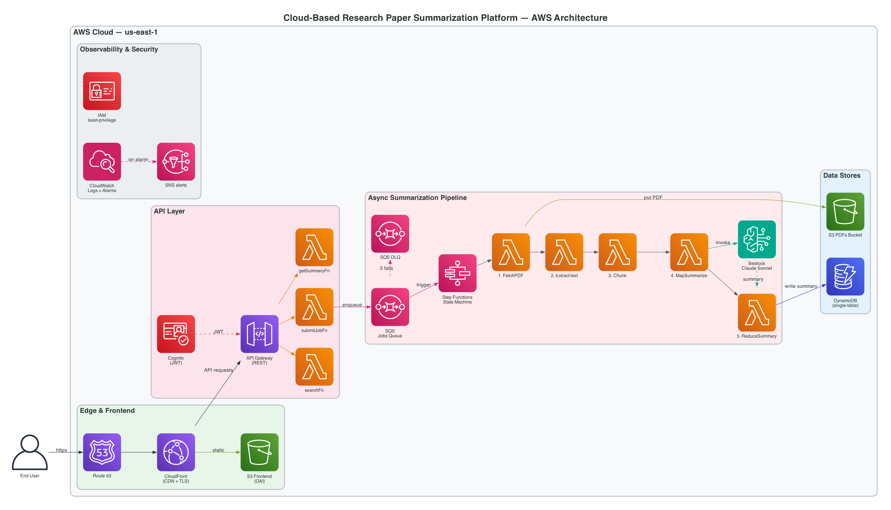

Search engines surface relevant titles. Citation graphs reveal influence. General-purpose chat assistants will summarize a paper if the user pastes it. None of these, alone, is a workflow.
arXiv and Semantic Scholar invoked in parallel from a single Lambda; results deduplicated by arxivId, DOI, and normalized title in one to two seconds end to end.
Objectives, methodology, results, limitations, contributions. SQS-triggered Step Functions map-reduce. Done in roughly thirty seconds for a typical paper.
Talk-to-PDF chat with cited chunks, related-papers ranking by cosine similarity, and a typed knowledge graph; all from the embeddings the pipeline already wrote.
Inter-service communication restricted to API Gateway, Amazon SQS, AWS Step Functions, and Amazon DynamoDB. No Lambda directly invokes another Lambda.

Map-reduce summarization is the hot path. The five-stage AWS Step Functions execution sidesteps the Lambda fifteen-minute ceiling, isolates per-chunk failures, and keeps state inputs under the 256 KB limit.
A thirty-page paper, twelve parallel chunks, plus reduction can blow past it. Step Functions has no such limit; long-running orchestration becomes free.
If one Bedrock call is throttled, that chunk retries with exponential backoff. The other eleven succeed once, and exactly once. No duplicate work, no whole-job redo.
Step Functions caps state inputs at 256 KB. Heavy data (PDFs, extracted text, chunks, embeddings) lives in S3. We thread only S3 keys, never bytes.
Access patterns are narrow and known in advance. A single-table layout with one GSI keyed on a content hash handles every read, with single-digit-millisecond latency under on-demand billing.
PK = USER#<userId>. SK prefix encodes entity type.
| PK | SK | Item |
|---|---|---|
| USER#u123 | PROFILE# | quota, plan |
| USER#u123 | JOB#j789 | summary, sections, meanEmbedding |
| JOB#j789 | CHUNK#0 | text, 1024-d Titan v2 vector |
| JOB#j789 | CHUNK#1 | text, vector |
| GSI1: PAPER#<sha256> | JOB#j789 | cross-user content-hash dedup |
A second user submitting a paper a first user already summarized triggers a GSI1 lookup, copies the existing JOB record, and refunds the second user's quota. Roughly $0.20 saved per duplicate.
Frontend bucket: private, served only via CloudFront Origin Access Control. PDFs bucket: 30-day IA transition, 90-day expiration. Storage cost stays flat; copyright concerns mitigated.
AWS-managed KMS at rest. On-demand DynamoDB billing means storage cost scales with actual usage. Block-public-access enabled on every bucket.
Idempotent writes, bounded retries, dead-letter quarantine, alarmed observability, least-privilege IAM. Six properties the rubric asks for and the system actually exhibits.
The Step Functions execution name is derived from jobId; an SQS redrive is rejected as a duplicate. Every DynamoDB write keys on jobId so a replay never corrupts state.
Step Functions retries each task with exponential backoff. The SQS redrive policy moves messages to a dead-letter queue after three failed attempts. No infinite-retry loops.
A MarkFailed state catches any uncaught error from any prior state, captures the cause, and updates the JOB record to status "failed" with the message. The user sees a clean failure with a reason.
Four CloudWatch alarms (DLQ depth, SF failure count, pipeline errors, API errors) wired to SNS email. AWS X-Ray distributed tracing on every function. AWS Budgets alarm at $50 per month.
searchFn cannot read the PDFs bucket. getSummaryFn cannot write DynamoDB. mapSummarize cannot read Cognito. Each Lambda carries its own role with the narrowest permissions it needs.
Inter-service communication is API Gateway, Amazon SQS, AWS Step Functions, or Amazon DynamoDB. Never lambda.invoke. A defect in one service cannot cascade into another by direct function call.
Numbers below are drawn from CloudWatch metrics and DynamoDB on the live deployment. Not benchmarks. Not promises.
Pranjal Mishra
Architecture, frontend, RAG, ops
Six CDK stacks, the Next.js frontend, the AWS Step Functions state machine, Amazon Bedrock integration, RAG chat with cited chunks, the knowledge graph extractor and visualization, the CloudWatch dashboard, four alarms, AWS X-Ray tracing, AWS Budgets, the deploy automation.
Yang Zheng
Search service
searchFn Lambda, the arXiv API client, the Atom XML parser, parameter validation with structured error handling, and 14 vitest unit tests covering query construction, Atom parsing, and handler edge cases.
Shreyas Sankpal
Pipeline orchestration
Pipeline orchestration design discussions and chunking-strategy review for the map-reduce summarization stages.
Kerry Huang
Auth and API surface
Authentication and API design discussions for the Amazon Cognito User Pool, the Secure Remote Password login flow, and the API Gateway authorizer surface.